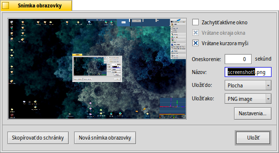

Snímka obrazovky
Snímka obrazovky
| Panel: | ||
| Umiestnenie: | /boot/system/apps/Screenshot /bin/screenshot | |
| Nastavenia: | ~/config/settings/screenshot |
Snímky obrazovky sa robia buď pomocou aplikácie Snímka obrazovky alebo stlačením klávesu PRINT.

V paneli Snímky obrazovky môžete rozhodnúť, či chcete urobiť snímku celej obrazovky alebo iba aktívneho okna a či chcete v snímke zahrnúť okraj okna a kurzor myši. Taktiež môžete nastaviť oneskorenie zachytenia snímky.
Pod tým nastavujete názov, formát a priečinok, do ktorého sa snímky budú ukladať, keď stlačíte tlačidlo . Namiesto ukladania súboru na disk ho môžete , odkiaľ môžete snímku vložiť priamo do inej aplikácie alebo môžete zachytiť .
Všetky nastavenia sa zapamätajú, keď budete chcieť znova zachytiť snímku, čím sa sprístupnia praktické klávesové skratky:
| Urobí snímku obrazovky s nulovým oneskorením a spustí panel Snímky obrazovky. | ||
| SHIFT PRINT | Urobí snímku obrazovky (bez otvorenia panelu) s ohľadom na posledné použité nastavenie. | |
| CTRL PRINT | Tiež urobí snímku obrazovky bez otvorenia panelu a s uloženými nastaveniami, no neuloží snímku ako súbor, ale skopíruje ju do schránky. |
 Robenie snímkov obrazovky z Terminálu
Robenie snímkov obrazovky z Terminálu
Existuje špeciálna aplikácia screenshot, ktorá sa dá použiť z Terminálu alebo zo skriptu.
screenshot --help zobrazí známe možnosti ako parametre:
~> screenshot --help
screenshot [OPTIONS] [FILE] Creates a bitmap of the current screen
FILE is the optional output path / filename used in silent mode. An exisiting
file with the same name will be overwritten without warning. If FILE is not
given the screenshot will be saved to a file with the default filename in the
user's home directory.
OPTIONS
-m, --mouse-pointer Include the mouse pointer
-b, --border Include the window border
-w, --window Capture the active window instead of the entire screen
-d, --delay=seconds Take screenshot after the specified delay [in seconds]
-s, --silent Saves the screenshot without showing the application
window
-f, --format=image Give the image format you like to save as
[bmp], [gif], [jpg], [png], [ppm], [tga], [tif]
-c, --clipboard Copies the screenshot to the system clipboard without
showing the application window
Note: OPTION -b, --border takes only effect when used with -w, --window